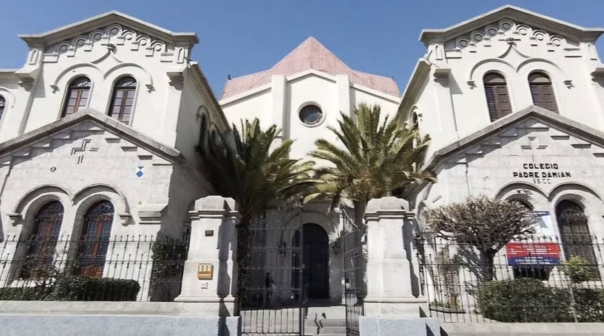

A little bit of me
My name is Brunella, but I like to be called Nella.. I came into this world on April 16, 2006, which means that I am 18 years old now :c, I grew up in the city of Tacna with my parents and my older brother until I was 2 years old, because of my dad's work we had to move to Arequipa which is where I live to this day, everything was going well until my younger siblings were born whom I love very much but sometimes they fill my patience. I spent elementary school in a small school in the Jacobo Hunter district. And I finished my upper and secondary school at the Padre Damian de los Sagrados Corazones school.
Hobbies
I have carried out various activities throughout my school years, including:
Practice basketball, volleyball and handball.
I practice piano and guitar.
I like and relax listening to music too much.
I love reading youth books or poems.
I know it's not a hobby, but I also really like going to sleep.
Compared to most of my peers, I don't play any video games.

Computer Graphics
Modeling: Creation of three-dimensional models of objects and virtual environments.
Rendering: Process of generating images from three-dimensional models, applying lighting, shadows, textures, etc., to create a realistic representation.
Animation: Creating movements and actions in three-dimensional objects to simulate movement in a virtual environment.
Visualization: Visual representation of scientific, medical, or engineering data and results to facilitate understanding and analysis..
Interaction: Development of graphical user interfaces (GUI) and user experiences (UX) for applications and software.
Applications of Computer Graphics:
-Entertainment
-Design and Architecture
-Medicine and Science
-Education
-Graphic Design and Advertising
-Simulation and Training
-Virtual Reality (VR) and Augmented Reality (AR)
Computer graphics is a broad and constantly evolving field, with a wide range of career opportunities in various sectors.